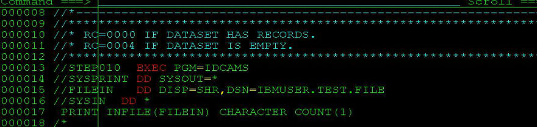
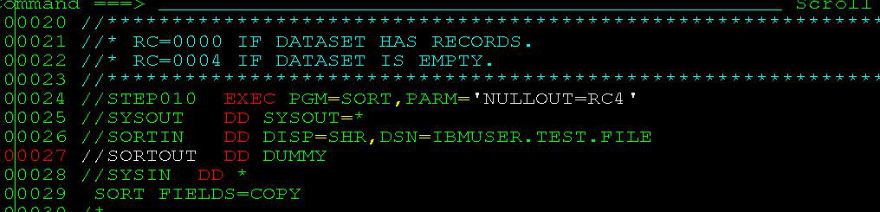
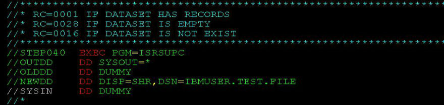
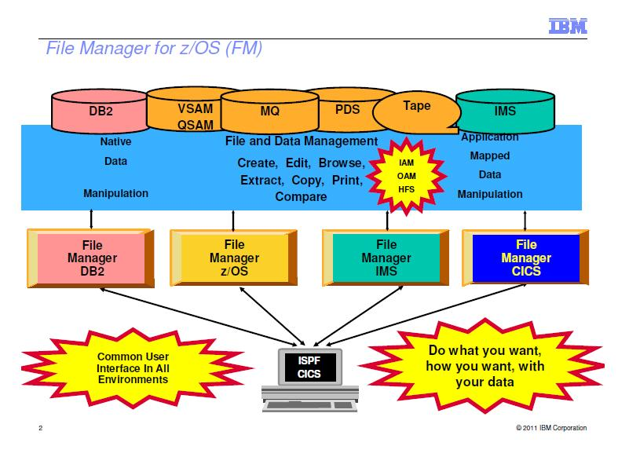

SORT:VB变长转FB定长,输出对齐
最近接触的项目，用的SORT的地方较多，准备写几篇sort的:
//STEP001 EXEC PGM=SYNCSORT,REGION=4096K
//SYSOUT DD SYSOUT=*
//SYSPRINT DD SYSOUT=*
//SORTIN DD DSN=SORTIN,DISP=SHR
//SORTOUT DD DSN=&&SORTOUT,DISP=(NEW,PASS),
// DCB=(DSORG=PS,RECFM=FB,LRECL=80,BLKSIZE=0),
// UNIT=SYSDA,SPACE=(CYL,(5,5),RLSE)
//SYSIN DD *
SORT FIELDS=COPY ...SOME INPUT DATA IGNORE
在编辑dataset的时候如果右上角提示SOME INPUT DATA IGNORE,请记得把每行末尾的行号关闭:
more ...NUM OFF
否则，后面8位就是行号，将此文件作为程序的input的时候就危险了!
No space in directory
在一个pds下面create member的时候右上角出现错误：
No space in directory
按PF1,提示：
PDS directory is full, allocate more directory blocks.
错误原因：当前PDS下面所容纳的member数量已经达到最大值了。用'I' 查看PDS的信息：
Current Allocation
Allocated cylinders : 1
Allocated extents . : 1
Maximum dir. blocks : 10
Current Utilization
Used cylinders . . : 1
Used extents . . . : 1
Used dir. blocks . : 10
Number of members ...Rexx顺序处理文件所有行
这是典型的自上而下扫描一个dataset中每一行,而做相应处理的Rexx脚本,几乎所有的处理文件I/O的Rexx脚本都会涉及到：
ADDRESS TSO
indataset = 'IBMUSER.REXX.EXEC(INFILE)' /*read in input file */
"alloc f(fin) ds('"indataset"') shr reuse"
"execio * diskr fin (finis stem in."
"free f(fin)"
do i=1 to in.0 /*loop in file until the last line reached */
one_line = strip(in.i)
call ...REXX学习笔记
最近在学习Rexx脚本，打算做一些自动化。归纳了些点总结下放在这里以备查询。
一些基本概念
- REXX:
REstructured eXtended eXecutor (REXX) language扩充结构化执行语言 - REXX中变量无需事前定义
- Debug REXX:用REXX TRACE或者用interactive debug facility来定位error
- SAA Procedures Language：REXX的子集，在TSO/E,CICS,IMS等多种环境中应用
- 要运行REXX exec，必须至少有一种可用的
Host command environments。默认的是TSO。还有MVS,LINK,LINKMVS,LINKPGM,ATTACH,ATTCHMVS,ATTCHPGM,ISPEXEC,ISREDIT,CONSOLE,CPICOMM,LU62,APPCMVS等等，常用的有 ...
PL/I编译器版本
PL/I编译器的版本，如下所示：
Product Product name Compiler "signature" Module prefix
360S-NL-511 S/360 OS PL/1 (F) ' ' IEM,IHE,IHL
5734-PL1 OS PL/I OPTIMIZING COMPILER V1 5734-PL1 IEL,IBM
5734-PL2 OS PL/I CHECKOUT COMPILER
5734-PL3 OS PL/I Opt Comp Lib ...Changeman的Stage和Checkout
把一个component(比如程序PRGM001)弄到package里面去有两种方法：一是stage，二是checkout。
Stage
所谓的stage就是当生产环境上面没有的，而你要将一个新的component弄到生产上面去的时候用stage。比如生产环境上面没有PRGM001这个程序，如果你最终想把这个程序通过Changeman安装到生产环境，那你就得现在自己的PDS下面建一个名为PRGM001的程序：
TESTUID.PRGMLIB(PRGM001)
然后stage到changeman里面去，具体做法是在ISPF输入:
C;1;5;
输入你的Package ID,回车 在Package前面输入命令：
S1

Checkout
和stage不同，checkout是针对那些已经存在于生产环境里面的components。它们是有版本之分的，比如你要Checkout一个现在已经存在于生产环境的PRGM002,在Package前面输入命令
C1

这里注意一下SOURCE LIBRARY.
SOURCE LIBRARY=0 说明checkout的是当前生产环境baseline里面的最新版本。
SOURCE LIBRARY=-1说明checkout的是比当前生产环境baseline旧的一个版本。
以此类推...
最后，在Package ID前面输入命令S2，查看package里面所有的components ...
utility判断dataset是否为空的方法
下面介绍四种利用Utility的返回码来判断一个dataset或者member是否为空文件的方法：
1.利用IDCAMS

2.利用SORT(DFSORT/SYNCSORT)

3.利用ICETOOL(SYNCTOOL)

4.利用ISRSUPC

方法不止以上四种，还有利用REXX脚本也可以判断，只是不属于本文讨论的范围。
Debug Tool for z/OS
作为一个PL/I、COBOL程序猿，调试程序是必须的一项技能。这里我来说说大机上面的调试工具IBM的DebugTool，它支持的环境包括BATCH, TSO, CICS, DB2, DB2存储过程以及UNIX等等。
这篇我来说说如何设置让程序可以被Debug
首先，你必须在编译程序的时候需要选择以Debug模式编译，这个在changeman里面直接在编译的时候选个IBM Debug Tool="Y"就可以了。
接着，如果是BATCH的，就需要在JCL的PARM中指定TEST运行时的参数，通过VTAM接口来初始化debug模式，VTAM%后面跟着的是userid，就像这样：

是BATCH的话，你还要有一个Debug的session，这个可以参照我的另外一篇博文：<<登陆大型机——Aviva的介绍>>，只需注意在建debug session的时候destination的IP一般和普通大机的物理ip是不一样。填上正确的ip,然后用你的id登陆,这里我的id是IBMUSER，须跟上面设置的一样。
回到JCL这边，submit，那恭喜你，你就可以看到Debugtool的画面了:

但是，如果程序是ONLINE的话，一般我们用CICS上面的DTCN这个工具来debug的。这里我假设你已经在上面“首先”里面正确编译了一个ONLINE的程序PRGM002 (带debug编译选项的)。然后，你登陆CICS ...
more ...IBM File Manager for z/os
IBM的File Manger 在大机平台上是非常强大的文件查看/编辑器，是一个强大的ISPF应用程序。这里先贴上一张IBM2011年最新的关于File Manger的结构图，我认为这张图很好地诠释了File Manager 的强大之处：

[图片来源于IBM官方网站，仅供学习交流之用]
参照上图，我这里要讲的是当中的第二块内容——File Manager for Z/OS，关于其它部分如File Manager for DB2,File Manager for IMS和File Manager for CICS，以后再说。(其实更主要是因为平常工作做我用for z/os用的多，db2和cics的用得少，不敢在这瞎说。)。基本的操作原理就不说了，我就说说我在平常工作当中的几个有用的小技巧好了。 以查看/编辑QSAM (sequential)的dataset为例，选项1是查看(View),选项2是编辑 ...